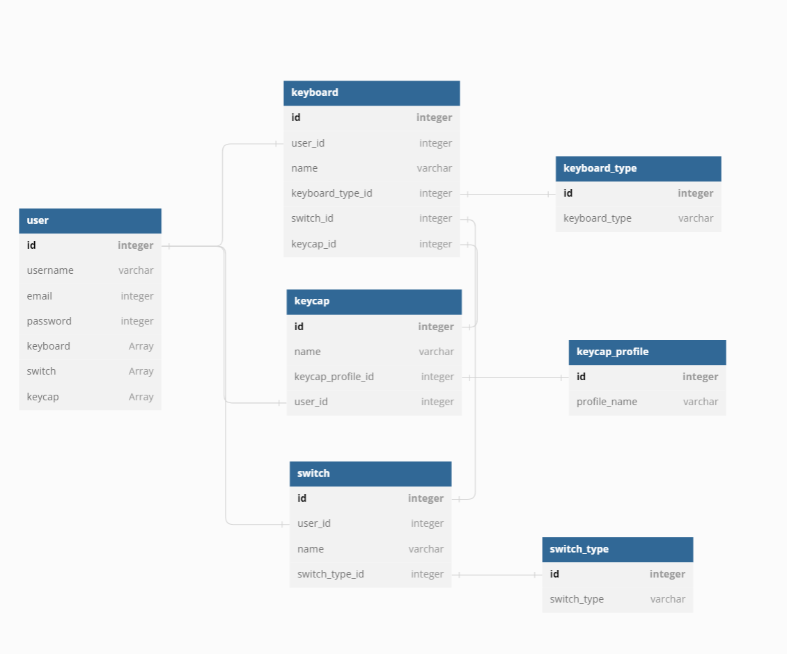
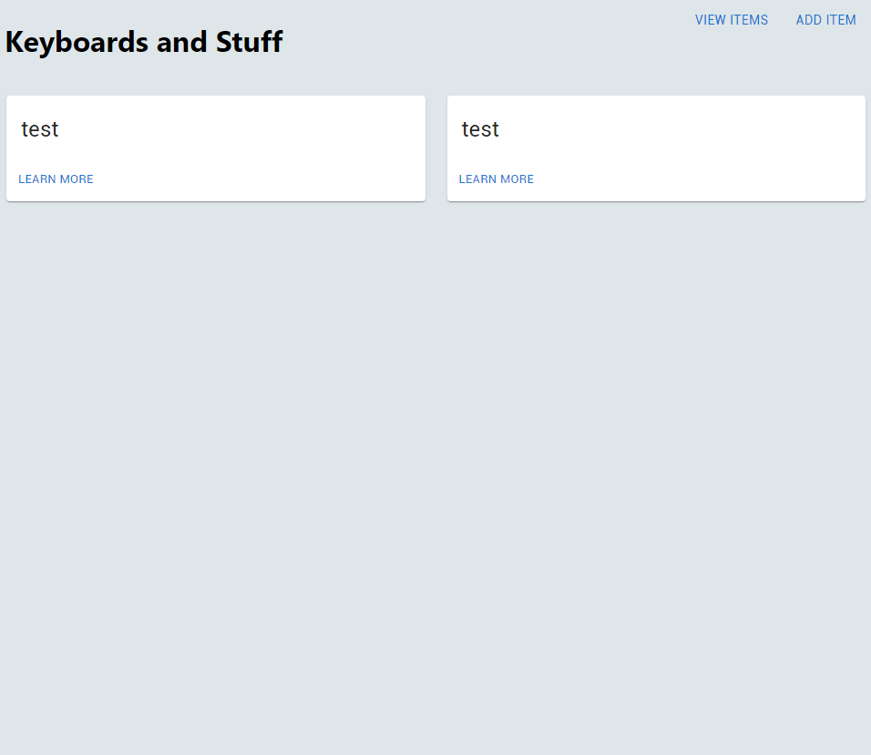
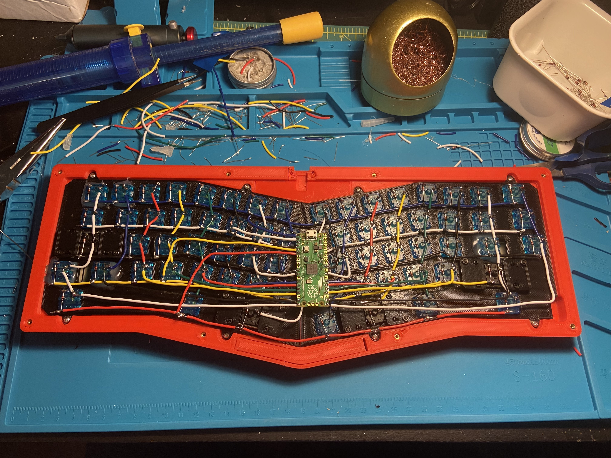
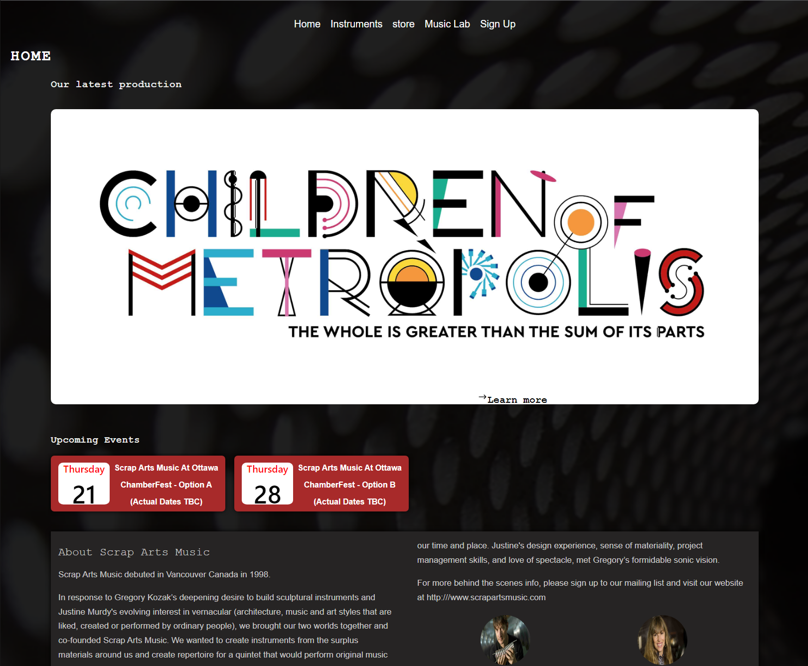

Portfolio

Keyboard Python Backend
Python-powered backend: For keeping tabs on my beloved keyboards.

Keyboard Manager
Keyboard Manager: Keeping tabs on my beloved keyboards.

Alice Keyboard
Open soucre software to create working keyboard.

Scrap-APP
Interactive instrumental Progressive Web Application created as a client project for final school project.